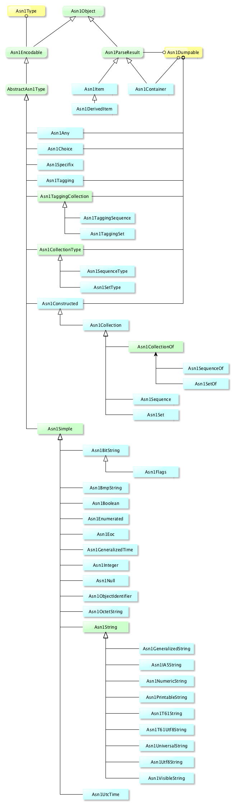

Kerby
Downloads
Getting Started
Documentation
Support
Community
About Apache
Kerby ASN1
ASN1 hierarcy

A ASN1 parser with easy and simple API
// encoding
Asn1Integer aValue = new Asn1Integer(8899);
byte[] encoded = aValue.encode();
// decoding
byte[] contentToDecode = ...
Asn1Integer decodedValue = new Asn1Integer();
decodedValue.decode(contentToDecode);
Integer value = decodedValue.getValue();
Data-driven ASN1 encoding/decoding framework and parser
With the following definition from Kerberos protocol
AuthorizationData ::= SEQUENCE OF SEQUENCE {
ad-type [0] Int32,
ad-data [1] OCTET STRING
}
You can model AuthzDataEntry as follows
public class AuthorizationDataEntry extends KrbSequenceType {
/**
* The possible fields
*/
protected enum AuthorizationDataEntryField implements EnumType {
AD_TYPE,
AD_DATA;
/**
* {@inheritDoc}
*/
@Override
public int getValue() {
return ordinal();
}
/**
* {@inheritDoc}
*/
@Override
public String getName() {
return name();
}
}
/** The AuthorizationDataEntry's fields */
private static Asn1FieldInfo[] fieldInfos = new Asn1FieldInfo[] {
new ExplicitField(AuthorizationDataEntryField.AD_TYPE, Asn1Integer.class),
new ExplicitField(AuthorizationDataEntryField.AD_DATA, Asn1OctetString.class)
};
/**
* Creates an AuthorizationDataEntry instance
*/
public AuthorizationDataEntry() {
super(fieldInfos);
}
/**
* @return The AuthorizationType (AD_TYPE) field
*/
public AuthorizationType getAuthzType() {
Integer value = getFieldAsInteger(AuthorizationDataEntryField.AD_TYPE);
return AuthorizationType.fromValue(value);
}
/**
* Sets the AuthorizationType (AD_TYPE) field
* @param authzType The AuthorizationType to set
*/
public void setAuthzType(AuthorizationType authzType) {
setFieldAsInt(AuthorizationDataEntryField.AD_TYPE, authzType.getValue());
}
/**
* @return The AuthorizationType (AD_DATA) field
*/
public byte[] getAuthzData() {
return getFieldAsOctets(AuthorizationDataEntryField.AD_DATA);
}
/**
* Sets the AuthorizationData (AD_DATA) field
* @param authzData The AuthorizationData to set
*/
public void setAuthzData(byte[] authzData) {
setFieldAsOctets(AuthorizationDataEntryField.AD_DATA, authzData);
}
}
And then define AuthorizationData simply
public class AuthorizationData extends KrbSequenceOfType<AuthorizationDataEntry> {
}
Then you can process with above definitions, encode and decode, without caring about the details.
Think about how to implement the following more complex and pratical sample from ITU-T Rec. X.680 ISO/IEC 8824-1:
A.1 ASN.1 description of the record structure
The structure of the hypothetical personnel record is formally described below using ASN.1 specified in
ITU-T Rec. X.680 | ISO/IEC 8824-1 for defining types.
PersonnelRecord ::= [APPLICATION 0] IMPLICIT SET {
Name Name,
title [0] VisibleString,
number EmployeeNumber,
dateOfHire [1] Date,
nameOfSpouse [2] Name,
children [3] IMPLICIT
SEQUENCE OF ChildInformation DEFAULT {}
}
ChildInformation ::= SET {
name Name,
dateOfBirth [0] Date
}
Name ::= [APPLICATION 1] IMPLICIT SEQUENCE {
givenName VisibleString,
initial VisibleString,
familyName VisibleString
}
EmployeeNumber ::= [APPLICATION 2] IMPLICIT INTEGER Date ::= [APPLICATION 3] IMPLICIT VisibleString – YYYYMMDD
Similarly as above, we can have (from the unit test codes):
public class PersonnelRecord extends Asn1TaggingSet {
protected enum PersonnelRecordField implements EnumType {
NAME,
TITLE,
NUMBER,
DATE_OF_HIRE,
NAME_OF_SPOUSE,
CHILDREN;
@Override
public int getValue() {
return ordinal();
}
@Override
public String getName() {
return name();
}
}
static Asn1FieldInfo[] fieldInfos = new Asn1FieldInfo[] {
new ExplicitField(PersonnelRecordField.NAME, -1, Name.class),
new ExplicitField(PersonnelRecordField.TITLE, 0, Asn1VisibleString.class),
new ExplicitField(PersonnelRecordField.NUMBER, -1, EmployeeNumber.class),
new ExplicitField(PersonnelRecordField.DATE_OF_HIRE, 1, Date.class),
new ExplicitField(PersonnelRecordField.NAME_OF_SPOUSE, 2, Name.class),
new ImplicitField(PersonnelRecordField.CHILDREN, 3, Children.class)
};
public PersonnelRecord() {
super(0, fieldInfos, true, true);
}
public void setName(Name name) {
setFieldAs(PersonnelRecordField.NAME, name);
}
public Name getName() {
return getFieldAs(PersonnelRecordField.NAME, Name.class);
}
public void setTitle(String title) {
setFieldAs(PersonnelRecordField.TITLE, new Asn1VisibleString(title));
}
public String getTitle() {
return getFieldAsString(PersonnelRecordField.TITLE);
}
public void setEmployeeNumber(EmployeeNumber employeeNumber) {
setFieldAs(PersonnelRecordField.NUMBER, employeeNumber);
}
public EmployeeNumber getEmployeeNumber() {
return getFieldAs(PersonnelRecordField.NUMBER, EmployeeNumber.class);
}
public void setDateOfHire(Date dateOfHire) {
setFieldAs(PersonnelRecordField.DATE_OF_HIRE, dateOfHire);
}
public Date getDateOfHire() {
return getFieldAs(PersonnelRecordField.DATE_OF_HIRE, Date.class);
}
public void setNameOfSpouse(Name spouse) {
setFieldAs(PersonnelRecordField.NAME_OF_SPOUSE, spouse);
}
public Name getNameOfSpouse() {
return getFieldAs(PersonnelRecordField.NAME_OF_SPOUSE, Name.class);
}
public void setChildren(Children children) {
setFieldAs(PersonnelRecordField.CHILDREN, children);
}
public Children getChildren() {
return getFieldAs(PersonnelRecordField.CHILDREN, Children.class);
}
public static class Children extends Asn1SequenceOf<ChildInformation> {
public Children(ChildInformation ... children) {
super();
for (ChildInformation child : children) {
addElement(child);
}
}
public Children() {
super();
}
}
public static class ChildInformation extends Asn1SetType {
protected enum ChildInformationField implements EnumType {
CHILD_NAME,
DATE_OF_BIRTH;
@Override
public int getValue() {
return ordinal();
}
@Override
public String getName() {
return name();
}
}
static Asn1FieldInfo[] tags = new Asn1FieldInfo[] {
new ExplicitField(ChildInformationField.CHILD_NAME, -1, Name.class),
new ExplicitField(ChildInformationField.DATE_OF_BIRTH, 0, Date.class)
};
public ChildInformation() {
super(tags);
}
public void setName(Name name) {
setFieldAs(ChildInformationField.CHILD_NAME, name);
}
public Name getName() {
return getFieldAs(ChildInformationField.CHILD_NAME, Name.class);
}
public void setDateOfBirth(Date date) {
setFieldAs(ChildInformationField.DATE_OF_BIRTH, date);
}
public Date getDateOfBirth() {
return getFieldAs(ChildInformationField.DATE_OF_BIRTH, Date.class);
}
}
public static class Name extends Asn1TaggingSequence {
protected enum NameField implements EnumType {
GIVENNAME,
INITIAL,
FAMILYNAME;
@Override
public int getValue() {
return ordinal();
}
@Override
public String getName() {
return name();
}
}
static Asn1FieldInfo[] tags = new Asn1FieldInfo[] {
new ExplicitField(NameField.GIVENNAME, -1, Asn1VisibleString.class),
new ExplicitField(NameField.INITIAL, -1, Asn1VisibleString.class),
new ExplicitField(NameField.FAMILYNAME, -1, Asn1VisibleString.class)
};
public Name() {
super(1, tags, true, true);
}
public Name(String givenName, String initial, String familyName) {
this();
setGivenName(givenName);
setInitial(initial);
setFamilyName(familyName);
}
public void setGivenName(String givenName) {
setFieldAs(NameField.GIVENNAME, new Asn1VisibleString(givenName));
}
public String getGivenName() {
return getFieldAsString(NameField.GIVENNAME);
}
public void setInitial(String initial) {
setFieldAs(NameField.INITIAL, new Asn1VisibleString(initial));
}
public String getInitial() {
return getFieldAsString(NameField.INITIAL);
}
public void setFamilyName(String familyName) {
setFieldAs(NameField.FAMILYNAME, new Asn1VisibleString(familyName));
}
public String getFamilyName() {
return getFieldAsString(NameField.FAMILYNAME);
}
}
public static class EmployeeNumber extends Asn1Tagging<Asn1Integer> {
public EmployeeNumber(Integer value) {
super(2, new Asn1Integer(value), true, true);
}
public EmployeeNumber() {
super(2, new Asn1Integer(), true, true);
}
}
public static class Date extends Asn1Tagging<Asn1VisibleString> {
public Date(String value) {
super(3, new Asn1VisibleString(value), true, true);
}
public Date() {
this(null);
}
}
}
### Asn1 API and parsing/dumping facilities
* ASN1 dumping tool to help analyze ASN1 encoding stream or packet. It can be used to exercise the framework with all kinds of testing binary inputs.
* The shortcut API for ASN1 parser, encoding, decoding.
### Notes
* Extensive tests coverage for BER & DER encoding and decoding
* Fully self-contained, no extra dependency
### License
Apache V2 License